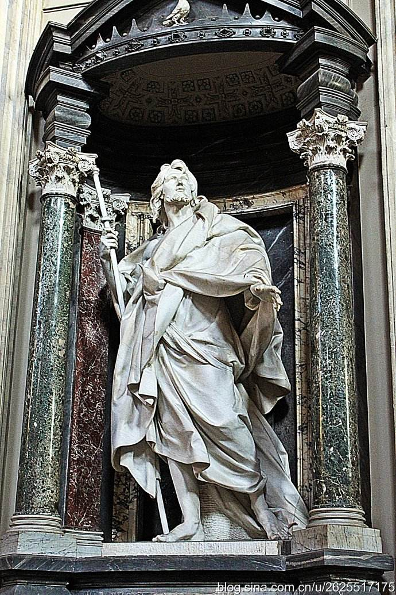

At the beginning of fourth Century, January 6th is the double
festival, Rome empire in the Eastern churches to commemorate
the birth of Jesus and the baptism of the known as "Epiphany"
also known as "Epiphany", that is God himself through Jesus to
the world. There was only the exception of the Church of the
road and lore, which only commemorated the birth of Jesus and
did not commemorate the baptism of Jesus. When historians
study in Rome with the Christian calendar found in December
25th 354 pages of records: "Christ was born in Judah,Bethlehem
." After research, is generally believed that in December 25th
with Christmas may begin in 336 A.D. The Church of Rome
about the year 375 spread to Asia Minor to Antioch,A.D. 430
to Alexandria in Egypt, the Jerusalem Church acceptlate,
while Armenia's Church still adhere to the January 6th Epiphany
is the birthday of Jesus.
|
||
Establishment of the Church of Rome | ||
|

|
||
| Copyright © 2017 291766389@qq.com | ||